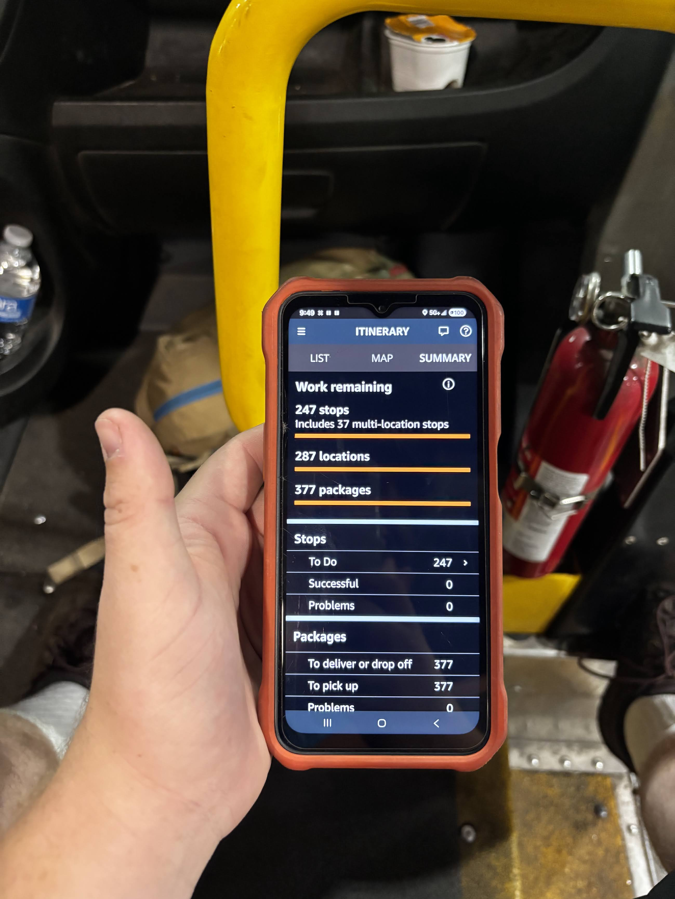
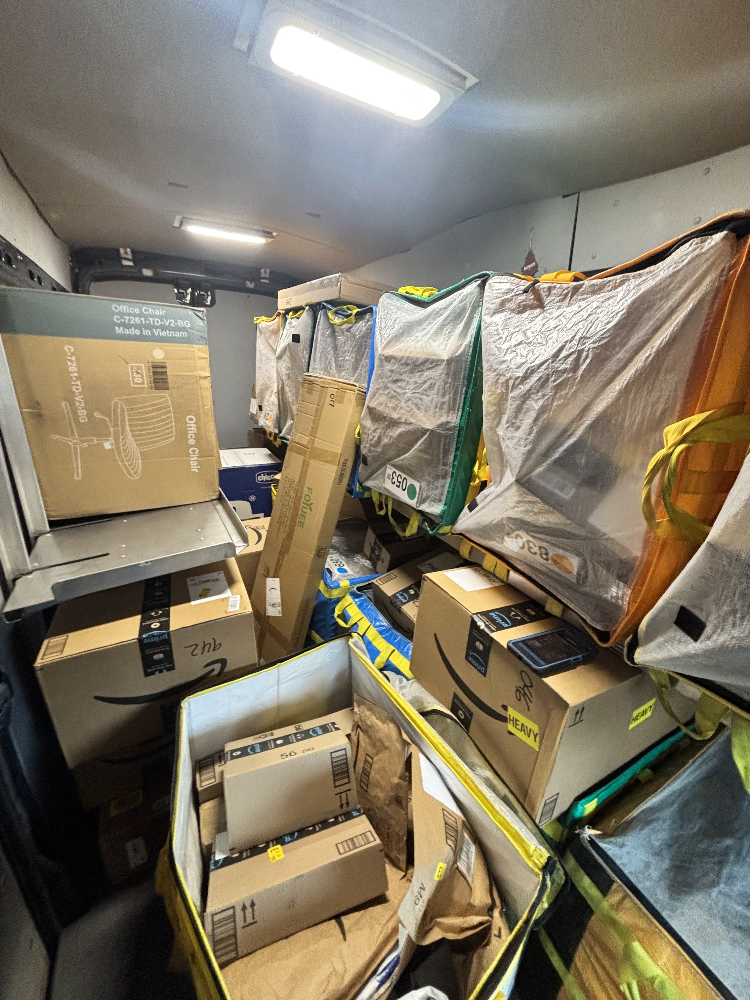
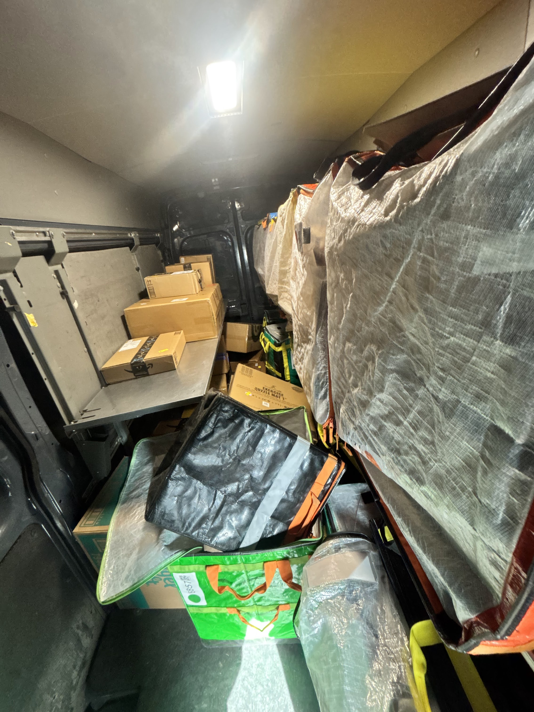
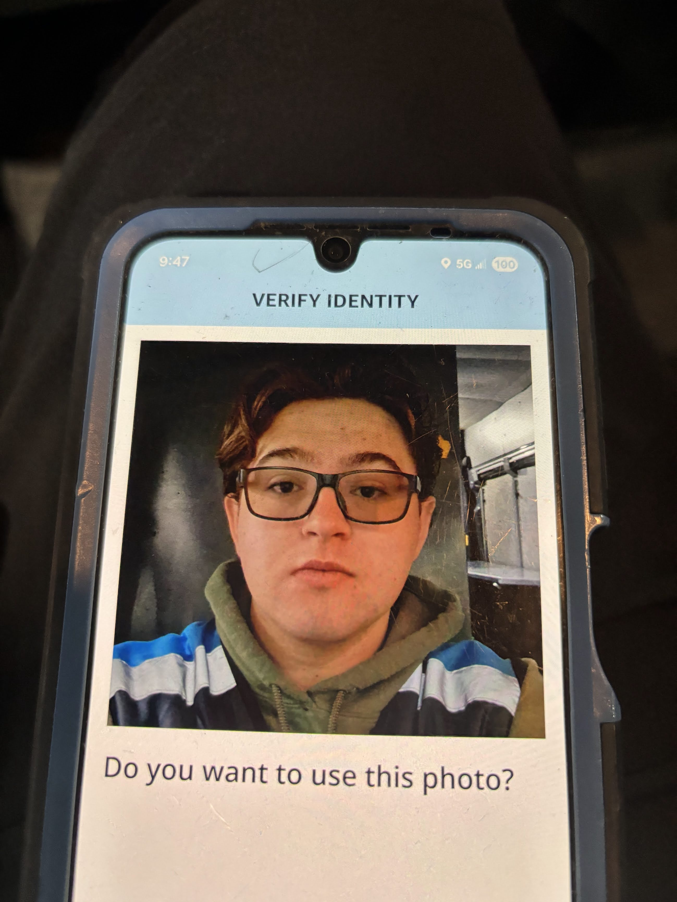

What Is This Job?
Amazon doesn't deliver packages itself, they contract it out to smaller companies called Delivery Service Partners (DSPs). I work for ASLAR Logistics, a DSP based out of Sumner, WA. We take vans full of Amazon packages and spend the day delivering them across assigned routes.
Every day is a bit different but load out is the same. You show up to the Amazon station, load your van, and get handed a route with anywhere from 100 to 250 stops. The app tells you where to go and in what order. The job is to execute it as efficiently as possible.

A screenshot of the Rabbit app showing a particularly heavy route — 247 stops, 377 packages.
A Typical Day
No two days are exactly the same, but the structure is consistent. Here's roughly how a shift plays out from start to finish:
| Time | What's Happening |
|---|---|
| 9:00 AM | Arrive at the Amazon station in Sumner. Clock in, grab your van assignment, and do a safety walkthrough of the vehicle. |
| 9:15 AM | Load your van. Packages are pre-staged in totes and bags. You scan every single one and organize them by stop order. |
| 10:00 AM | Depart the station. The Rabbit app (Amazon's driver app) loads your route and starts navigating stop by stop. |
| 10:00 AM – 5:00 PM | Deliver, deliver, deliver. Residential stops, apartments, businesses — each one has its own quirks. You're constantly scanning, photographing, and moving. |
| 5:00 PM | Head back to the station. Return any undeliverable packages, do end-of-day van inspection, and clock out. |
| 5:30 PM | Home. Sit down. Your feet hate you. |

A loaded van before departing — organized chaos.

Every inch of space gets used on a big route.
How Each Stop Works
Most people picture delivering a package as just dropping a box on a doorstep — and sometimes it's exactly that. But there's actually a specific process you follow for every single stop to make sure it's done correctly:
-
Navigate to the address
- The Rabbit app routes you automatically — no manual input needed
- You can override the order if it makes more geographic sense
- Some addresses have special access codes or gate instructions in the notes
-
Find and retrieve the package(s) from the van
- Packages are sorted by stop number, but bigger routes get messy fast
- Multi-package stops require matching every item before leaving the van
- Heavy/oversized packages sometimes need a dolly
-
Deliver the package
- Follow any customer preferences (front door, garage, back porch, etc.)
- For age-restricted items (alcohol), you must verify ID on the app
- Packages requiring a signature require the customer to physically sign
-
Scan and photograph proof of delivery
- Take a clear photo of the package at the drop location
- Scan the barcode to mark it as delivered in the system
- Select the exact drop location (front door, mailbox, garage, etc.)
-
Handle exceptions if needed
- No safe place to leave it → mark as "unable to deliver" and reattempt
- Wrong address → flag it in the app and contact dispatch
- Customer not home for a required signature → leave a notice

Age verification prompt on the Rabbit app — some deliveries require a selfie to confirm you're the right driver.
Stories from the Road
After hundreds of hours on the road, you collect stories. Here are a few of my favorites from my time as a delivery driver:
The 377-Package Day
There are big days, and then there are those days. The screenshot on this blog says it all — 247 stops, 287 locations, 377 packages. I remember standing at the back of my van before departure just staring at the wall of boxes and totes, doing mental math on whether I'd actually finish before sunset. I did — barely. Got back to the station at 6:45 PM with two packages I couldn't deliver because the addresses didn't exist. My step count that day was over 22,000. I ate an entire pizza that night and I do not regret it.
The Dog That Adopted Me
One afternoon I was dropping off a package at a house in a quiet neighborhood when a golden retriever bolted out of the garage and followed me back to my van. I assumed it would turn around. It didn't. I drove two stops forward, stepped out to deliver a package, and there was the dog — sitting in the passenger seat looking completely comfortable. I ended up driving him back to his house, where his owner was frantically searching the yard. She laughed, I laughed, the dog looked like he had no regrets. Best co-pilot I've had.
When the App Just... Didn't
Technology is great until it isn't. Mid-route one day, the Rabbit app froze on stop 83 of 201. Completely locked up. No navigation, no scanning, nothing. I called dispatch, and they told me to restart — which would reset my progress in the app (not the actual deliveries, thankfully). Standing on a random street in Puyallup, I had to manually track which stop I was on, approximate where I was in the route, and restart the whole app while hoping it would sync correctly. It did, eventually. Added about 45 minutes to my day. Dispatch bought us all coffee the next morning, which was nice.
A Day in the Life — On Camera
Want to see what a delivery day actually looks like? This video captures the experience well — loading up, navigating, and grinding through stops.
Are Amazon Drivers Actually Happy?
Delivery driving has a reputation for being a grind — but what do the numbers actually say about job satisfaction? The visualization below explores survey data on driver satisfaction across delivery and gig economy jobs.
📊
Tableau Visualization — Action Required
Replace this placeholder with your Tableau embed code.
Go to public.tableau.com, find a job satisfaction viz, click Share → Embed Code, and paste it here.